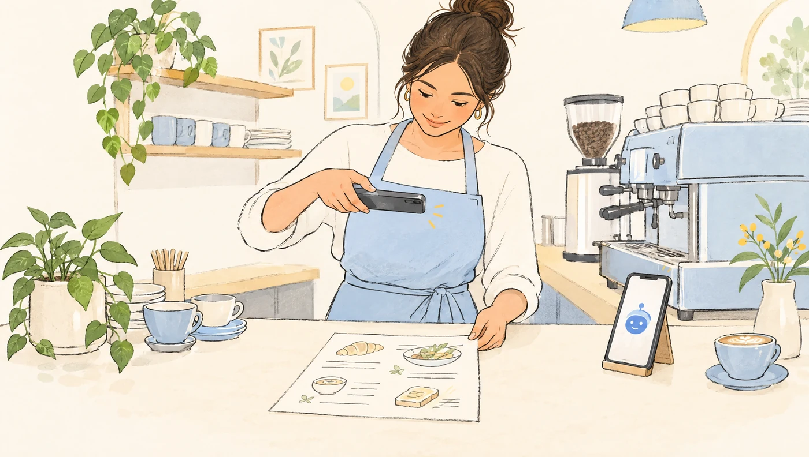
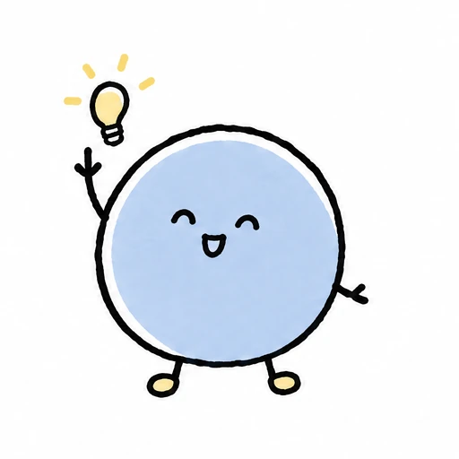
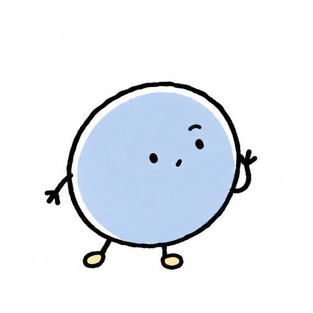
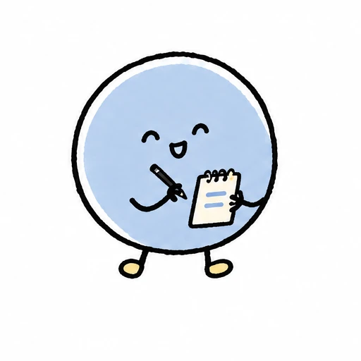
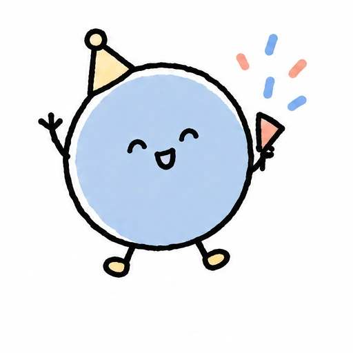
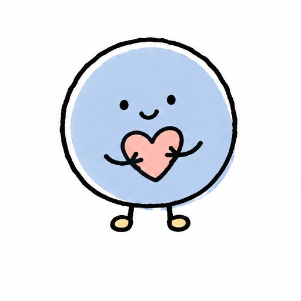

사장님을 돕는 AI 에이전트, 라미
대화하듯
가볍게 시작해요.
샵의 일은
라미와 함께.
메뉴판 한 장을 보여주세요.
라미가 샵을 소개하고, 손님의 언어로 대화하며
주문을 받는 모습을 만나보세요.
현재는 준비된 시나리오로 체험하는 데모입니다.
 안녕하세요, 라미예요!
안녕하세요, 라미예요!사장님과 라미주모 샵을 준비하고 있어요
시안 화면라미에게 이야기해 보세요
단계를 눌러보세요. 준비된 예시이며 실제 AI·결제는 연결되지 않습니다.
사장님은 잘하는 일에.
라미는 곁에서 차근차근.
어렵게 배울 필요 없이
대화로 시작
대화로 시작
낯선 언어의 손님도
편하게 응대
편하게 응대
홀과 주방, 사장님이
같은 주문 확인
같은 주문 확인


사장님의 샵을 알려주세요.
라미가 하나씩 도와드릴게요.
작은 샵에도, 든든한 한 명
손님을 반기는 일,
라미도 함께할게요.
메뉴를 설명하느라, 주문을 전달하느라
놓쳤던 순간들을 생각했어요.
- “이 메뉴, 많이 매운가요?”
손님은 편한 언어로 묻고 메뉴를 살펴봐요.
- “6번 테이블 주문 들어왔어요.”
어느 손님의 주문인지 홀과 주방이 확인해요.
- “준비가 끝나면 알려드릴게요.”
샵이 바꾼 진행 상황을 손님도 함께 봐요.
처음부터 잘 몰라도 괜찮아요.
라미가 순서대로 물어볼게요.
어려운 설정 대신,
사장님이 이미 알고 있는 이야기부터.
- 1

우리 샵을 소개해요
샵 이름, 운영 시간, 메뉴판 사진.
라미와 이야기하며 채워가요. - 2

사장님이 확인해요
메뉴와 가격이 맞는지 살펴보고,
손님에게 보여줄 내용을 정해요. - 3

손님과 만나요
샵 링크는 SNS에, QR은 테이블에.
손님은 자기 언어로 시작해요.
